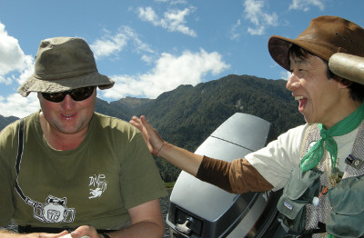
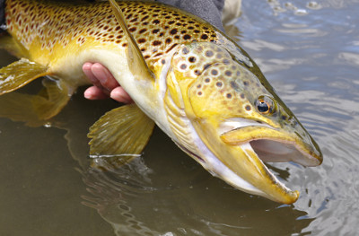
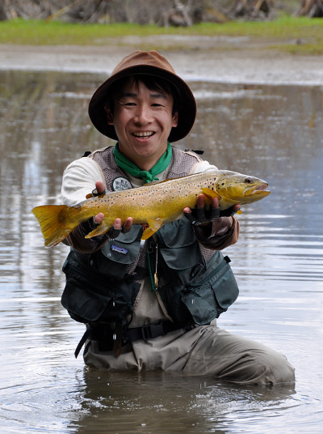
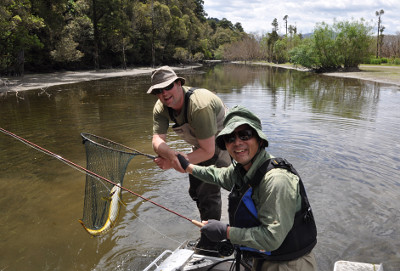
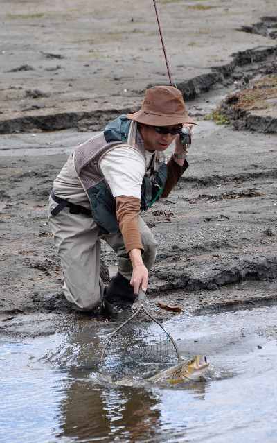

釣行日誌 ＮＺ編 「翡翠、黄金、そして銀塊」
ボートを押して
2010/11/26(FRI)-4
その後も好調な釣りが続き、１１時半頃になったので、昼食となった。ディーン君がコーヒーを入れてくれて、サンドイッチを皆で頬張った。お父さんに似て、ジョークが好きなディーン君は、いつも何か面白いことを言って僕たちを笑わせてくれた。

その後釣りを再開し、僕が東側の岸から出てきている小さな沢の流れ込みで良型を釣った。胸ビレの大きな、見事なブラウンだった。

さらにボートは進み、また別の流れ込みで今度は鰐部さんが大きな鱒を釣り上げた。渇水の条件下では、ほんの小さな流れ込みも鱒たちにとっては居心地の良い場所になっているようであった。

これまでの釣りはすべて小さな黒いウーリーバガーで攻めてきた。この小さなストリーマーが何のイミテーションになっているかはわからないが、NZ南島西海岸の湖を釣るときにはとても有効なフライだと言うことがわかった。
さらにディーン君はボートを進めてゆく。するとだんだんと両岸が近づいて来て、とうとう狭い水路のようになってしまった。そのあたりで僕に１尾掛かり、やりとりの後で取り込んだ。

もう少し水路を進んでゆくと、水深もごく浅く、ボートの底が湖底に乗り上げるようになった。ディーン君は、
「ようし、みんなボートを降りて押してくれ」
と、僕たちに言った。どうやらこの狭い水路を抜けた向こう側に良いポイントがあるらしい。三人はボートを降りて湖底に立ち、よいしょよいしょとボートを押した。初夏の日差しは強く、すぐに汗だくになる。湖底には藻がびっしりと生えており、足が藻の中に踏み込んでしまってなかなか次の一歩が踏み出せない。うんしょ、こらしょと延々３０分は押しただろうか。ついに水路の狭いところを抜け、ふたたびボートが進めるだけの水深になった。やれやれと喜んだのもつかの間、こんどはディーン君が、岸に上がって陸っぱりをやると言う。ボートでの湖の釣りは楽だなぁと決め込んでいた僕は、今日も歩くのかといささか気が重かった。
また岸から流れ込みが出てきているポイントがあり、鰐部さんがそっと湖岸を歩いて近づいてゆく。鱒を見つけた彼がウーリーバガーをキャストすると、鱒はもんどりうってストリーマーに飛びついた。足場は良いので安心してファイトできる。鰐部さんはロッド捌きも鮮やかに、その鱒を釣り上げた。

それからしばらく岸沿いに、ストーキングで鱒の姿を探しながら三人で歩いた。またしても流れ込みがあり、水流が湖面に飲み込まれるあたりで黒い影が見えた。少し遠い距離から狙い、魚が動いていないのでゆっくりとフォルスキャストを行う。数回打ち込んだ後で狙い通りの場所にフライが落ちた。リトリーブ。影が動く。ストライク！ が、しかし、ファイトの最初でフックが外れ、ラインが力無く横たわった。これで今日の釣りはおしまいとなり、再び歩いてボートまで戻り、エンジンをかけてランプの所まで戻った。帰途、赤とんぼの群舞に出会ったり、鴨の群れに出くわしたり、退屈はしなかった。またボートを押したし。（笑）
釣行日誌ＮＺ編 目次へ
サイトマップ
ホームへ
お問い合わせ